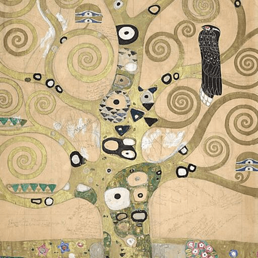

第32卦 雷風恆：重複裡的新
上卦：雷（☳） ・ 下卦：風（☴）

核心意義
真正的成就來自恆定的堅持。一時的熱情容易，長久的恆心可貴；認清什麼值得堅持，然後以穩定的節奏持續耕耘。恆不是死守不變，而是在堅守核心的同時，隨順時勢微調方法。
「我以恆定的心守護所珍視的，讓堅持在時間中開花。」
祝福
願你所珍惜的關係與信念，都能在時間裡越走越穩、越走越深。
五大類別指引
感情
感情的可貴在於恆常的陪伴，而非一時的激情。此刻不必追求新鮮刺激，而應珍惜日常的穩定；把承諾落實在每天的小事裡，恆定的關懷比偶爾的浪漫更能讓關係長久。
把承諾落實在每天的小事裡：
- 珍惜日常的穩定，不追求恆常新鮮。
- 重要時刻的陪伴勝過偶爾的浪漫。
事業
你正在耕耘的事業需要時間發酵，一時看不到成果不代表方向有誤。與其頻繁更換跑道，不如認清值得投入的方向後持續深耕；穩定累積專業與信譽，恆心會帶來真正的回報。
認清值得投入的方向，持續深耕：
- 不被一時的成果起伏動搖。
- 以穩定的節奏累積專業與信譽。
健康
健康是恆常的課題，突擊式的保養不如持續的好習慣。挑選幾項你能長久做到的改變並堅持下去；不因一時懈怠而全盤放棄，中斷了再繼續就好，恆定的力量在於不放棄。
挑選能長久做到的改變，堅持下去：
- 中斷了再繼續，不因懈怠全盤放棄。
- 用月份衡量進展，不追求立竿見影。
財運
財務的累積需要恆心，定期定額的投入勝過頻繁進出。認定理財方向後就穩定執行；不被短期的波動動搖、不因一時的漲跌改變長期規劃，時間會讓複利說話。
認定理財方向後穩定執行：
- 定期投入，不被短期波動動搖。
- 相信時間的複利，耐心等待。
人際
恆定的友誼是時間養出來的。與其不斷認識新朋友，不如用心經營已值得珍惜的關係；定期聯繫、兌現承諾、在對方需要時出現，恆常的陪伴是最深的情誼。
用心經營已值得珍惜的關係：
- 定期聯繫、兌現承諾。
- 在對方需要時穩定出現。